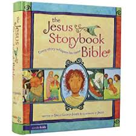

Welcome to our website. If you go to this church and would like to know what we have in stock, look no further.
Please note, however, that we may not have all the books shown on this list and that the prices may change, but this should give you general idea of the books in store.
One book that is amazing and shows that faith in God can change your life is Out Of The Black Shadows. I would really recommend this book to all Christians. It is available for £7.99 at our bookstore.

A series that will introduce your children to the Christian Faith is the xtb series. It is full of fun puzzles and challenges that will encourage them to read the Bible and learn more of the stories in it. Each of them cost £3.50.

Another book that was proving to be quite popular is Did The Devil Make Me Do It? Availible at £3.00.

A book which in the past we have had many requests for is Revalations by John Stott. But we didn't have it. Luckily, now we do.

Another book that's proving quite popular is Captive In Iran.

If your children are interested in the life and miracles of Jesus we have a hardback edition of the Jesus Storybook Bible for 8.00.
Sam Allberry, one of our ministers has also written books! Ask for Connected, Lifted or Is God Anti-Gay?